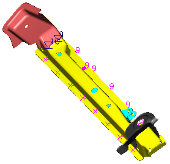
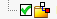

使用部件导航器和装配导航器获取关于焊接的信息
-
打开 wld1_query_wld 并开始建模应用模块
 。
。
-
查看沿着凸缘的各种焊接符号，并注意红色组件在何处粘附于黄色组件上，观察它们的颜色和符号。
-
查看装配导航器中的组件。
工作部件是顶层装配：query_wld。
-
查看部件导航器中的特征。
部件导航器中列出了许多特征，包括链接的面、相交曲线以及基准平面，焊接特征位于窗口底部附近。
特征分组 (991) “SPOT_WELD”
特征分组 (1002) “PLUG_WELD”
特征分组 (1013) “PLUG_WELD”
特征分组 (1023) “FILLET_WELD”
特征分组 (1053) “FILLET_WELD”
 特征分组 (1065) “ARC_SPOT_WELD”